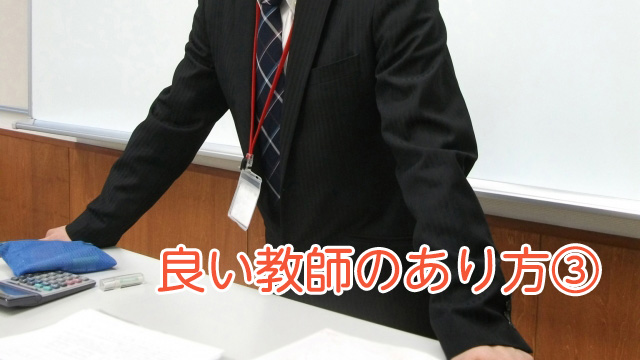

向上心の種をまくこと
教師になりたての人が最初に衝撃を受けるのは、一生懸命生徒に授業をやったとしても大半の生徒がその内容をほとんど覚えてくれないことです。
「あんなに頑張って教えたのにナゼ!?」
これが教壇に立って日の浅い教師がまず思い知らされる「現実」です。
「生徒はやってこないもの」「熱心に教えても分かってくれないもの」と無力感におちいるか、それとも気を取り直して「何とか理解させてやる」と新たに意欲を燃え立たせるか分かれ目になるところです。
そして無力感にとらわれる教師は「やってこない生徒が悪い」と全てを生徒のせいにしてしまいがちですが、これはスタート地点で教師がある種完全主義だからです。
つまり「ちゃんと教えた」→「理解できたはず」と単純に信じ込んでいるわけで、勉強に限らず生徒指導でも「あれほど言ったのだから伝わっているはず」と思い込むわけです。
仕事などでも未熟な人ほど言葉で言ったのだから伝わったはずと思って大失敗することがあります。あれと一緒です。
だから生徒には50％でも伝われば良いと思って接したほうが良いのです。下手に完全主義にとりつかれると、うまく行かないと一気に落ちこんでしまいます。
妥協しろということではなく、生徒もテストが近いとか入試が近いとなれば本腰を入れて勉強する時期が来るし何とか帳尻は合うものなのです。
それより教師は生徒の現状に一喜一憂するのではなく、学ぶことの大切さや教科の面白さを伝えるほうがよいのです。
「知識があることは、ない人間より視野が広がる。それは長い人生で大きく差がつくことになる。」
そのような話を交えて語るだけでも生徒の向上心に訴えることができます。
生徒に限らず誰でも教わったことをその場で完全に理解することはマレです。頭で分かったつもりでもフにおちてないのです。
色々失敗したり試行錯誤した結果、自分なりに工夫し考えてやっと身につくものです。
今日教えたら明日には理解できる、行動に移せるというものではないのです。
本人がその気になって初めて「分かった」といえる。
教師はだから生徒が自分の頭で主体的に考えるようあの手この手で導くしかない。
そのためには常に向上心に働きかけるということです。
公平性と客観性
教師の良し悪しを考える際、私の頭に浮かぶことはいつもこのことです。
生徒の状況を客観的に見て公平に扱う。
これはなかなか難しいのです。教師も人間です。どうしても特定の生徒に目が行ってしまいがちです。
特に多いのが、問題ある生徒に対しての接し方。「態度が悪い」「やって来ない」「トラブルを起こす」
こういう生徒に意識（注意）が注がれエネルギーを過剰に使ってしまう。
結果として大部分の目立たない大人しい子がワリをくってしまうわけです。
重要なのは、目立つ問題行動をする生徒は無意識に先生の関心を引いて一人占めにしたい気持ちがあることに気づくことです。
そして教師自身が己の中に「生徒をどうにか更正したい」という自己満足におぼれていないか常に点検することです。
確かに緊急事態はあります。たとえば暴力だとか警察沙汰を起こしたとか。そういう場合は特定の生徒にかかりっきりになることもあるでしょう。
しかし平時においては公平になるべく受け持ち全生徒に関心をもたなくてはいけません。
私にも経験がありますが、大人しく目立たない子はどうしても「問題なし」とスルーしてしまいがちです。後になってその子がとても大きな問題を抱えていることを知って後悔することもありました。
そもそもあからさまに問題を起こす生徒に目が行くのは当り前であって、むしろ小さなサインを発する生徒をこそ気にかけるのが良い教師たる由縁ではないかと思います。
特に男性教師は女子生徒の細かな変化を見逃しがちです。たとえば髪型（髪の色）が変わった、うっすらと化粧しているなどは、けっこう重要なサインにもかかわらず見落してしまう。
教師というのは教室においてたとえて言えば太陽のような存在です。太陽である以上一人ひとりもれなく光をあてなければなりません。特定の者だけに光をあて過ぎればむしろその影は濃くなります。
「誰の太陽にもなろうとしないからこそ皆の太陽でい続けられる」
そう肝に銘じて欲しいと思います。
教えすぎず生徒を信じる
生徒に勉強を教えようとしてはいけない
そう言うと面喰う人がいますが私はこの言葉は真実だと確信しています。
たとえば真に優秀な医者なら「医師が患者を治すのではない。患者自らが治っていく」という言葉に異論はないでしょう。
心理療法家である河合隼雄もかつて「カウンセラーがクライアントを治すのではない。クライアントが気づきを得て勝手に治癒が起こるのだ」と言っています。
教師にも同じことがいえます。
「教師が教えるのではない。生徒が勝手に学んでいくのだ」と。
病気が治るときは患者の自己治癒力が発動した結果であり、心の病も本人の自己回復力そのものが活性化したときです。
学習も生徒の意欲にスイッチが点火したとき初めて、実のある学習行動が現われるというわけです。
では医者、カウンセラー、教師は何のために存在するのでしょうか。
それは患者、クライアント、生徒の自発的意思を支え励まし引き出すためです。
勉強を教えてやろうとすれば、どうしても教える者（教師）と教えられる者（生徒）という2極が生まれます。教えられる者はどこまでも受け身の存在と化してしまうでしょう。
勉強でも仕事でも人は「受け身」からどこかの時点で「能動（主体性）」に切り変わらなければなりません。
生徒をそのまま生徒（受け身）の状態に置いてはなりません。彼らの意欲、向上心に訴えかける行為こそが必要で、その姿勢が彼らの主体的に学ぶ意思を引き出すことにつながるのです。教えること自体は一部に過ぎません。
言葉を変えれば生徒の可能性をどこまでも信じるというあり方です。
以前ピグマリオン効果について話したことがありました。
詳細は省きますが、これは教師が生徒の能力を信じた場合とそうでない場合の実験結果から得られた効果のことを言います。
同程度の能力の生徒たちをいくつかのクラスに分けたとき、生徒の優秀さを信じている教師のクラスは学力が伸びたのに、信じていない教師のクラスは伸びなかったというものです。
いかに生徒（の可能性）を信じることが大切か分かります。
結局良い教師の条件も最後はこれに尽きるのだと思います。